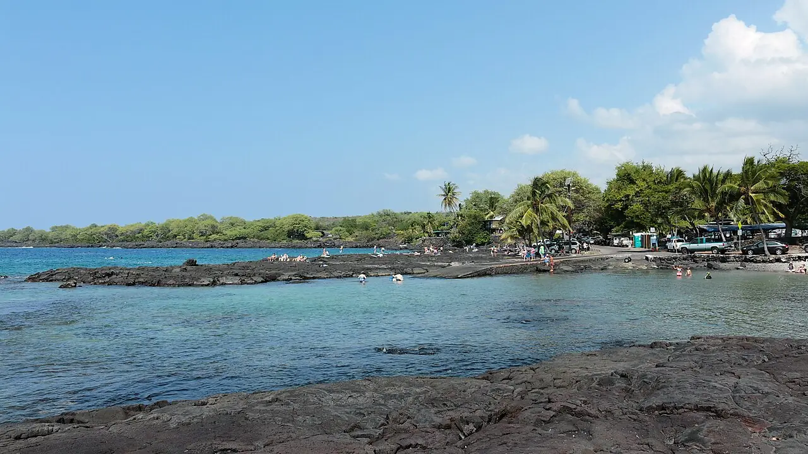

Two Step — Hōnaunau
Big Island, Hawaï, États-Unis · snorkeling, plongée

Mise à l’eau par deux marches naturelles de lave, juste à côté du parc historique de Puʻuhonua o Hōnaunau. Le récif descend vite et l’eau est souvent limpide, avec tortues vertes et poissons de récif.
- Lieu
- Big Island, Hawaï, États-Unis
- Niveau
- Intermédiaire
- Activités
- snorkeling, plongée
- Type d'eau
- Mer / océan
- Coordonnées
- 19.42, -155.91 (position approximative du secteur)
Dangers à connaître
- Lave coupante à l’entrée et à la sortie : chaussons conseillés.
- Ressac contre les rochers dès que la houle monte ; pas de surveillance.
- Dauphins à long bec : approche interdite à moins de 50 yards (environ 45 m).
Le conseil d'Ocean Buddy
Entre et sors par les « deux marches » à marée haute et mer calme, et laisse les tortues au repos sur les rochers.
Ouvrir dans Ocean Buddy Télécharger sur l'App Store
Source : Fiche Ocean Buddy · septembre 2026 · à vérifier localement.